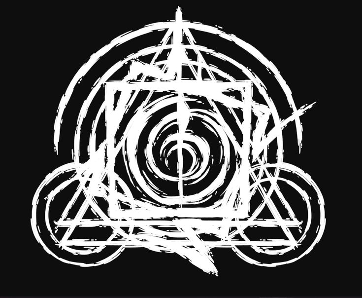
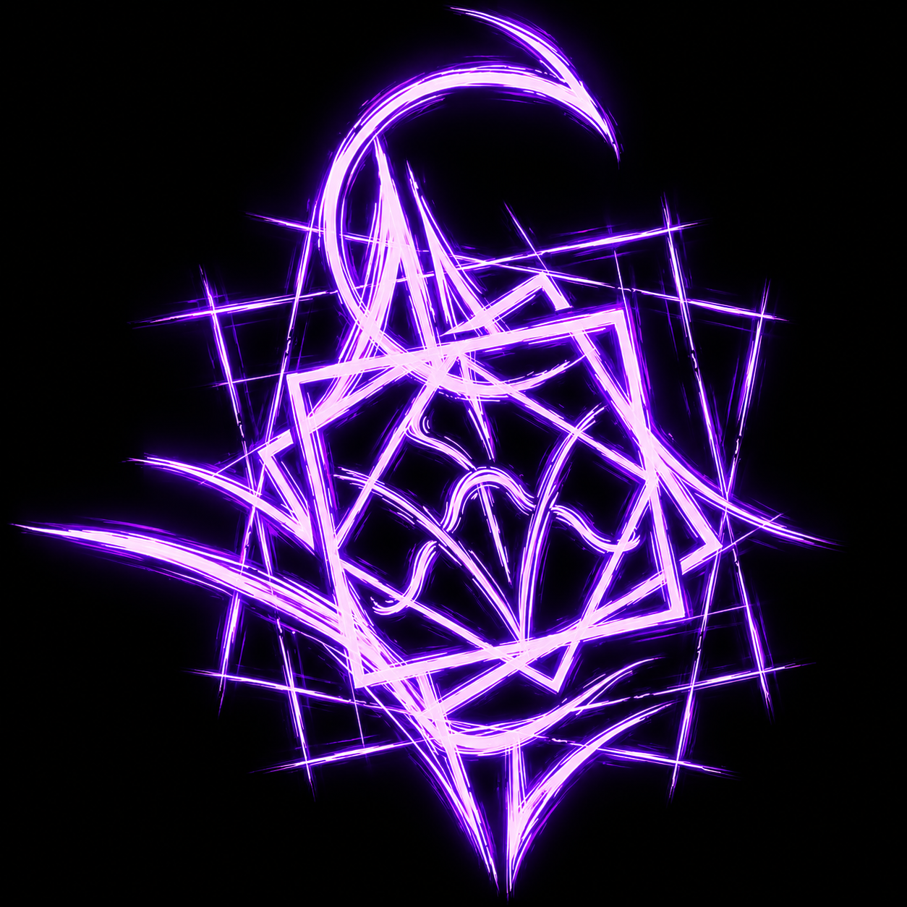
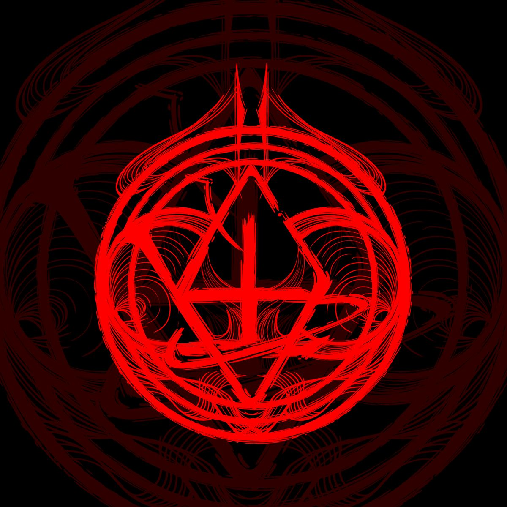

Rituais Aprendidos
Decadência
Decadência foi um dos primeiros rituais que eu aprendi com Marcela, na verdade foi o primeiro aprendi dia 14/02/1997, basicamente ele definha os atingidos através de um toque mortal, para utiliza-lo precisa de pensamentos de preferencia fúnebres e cruéis, é como ver a morte em um toque

Eletrocussão
Eletrocussão um dos primeiros rituais que aprendi com Marcela, dia 14/02/1997. Basicamente ele emite um tipo de corrente elétrica o que causa queimaduras absurdas ao ponto de explodir cabeças se usado da maneira certa, basicamente queima as pessoas através de um raio minimizado

Recontrução
Reconstrução foi um dos primeiros rituais que aprendi com Marcela, dia 14/02/1997. Basicamente é capaz de reconstruir pele nervos e até ossos, não sei se é possível perder uma perna e reconstruir ela, porém não quero testar em mim (Posso fazer o Veeti voltar a andar com isso)

Terceiro Olho
Terceiro Olho foi um dos primeiros rituais que aprendi com Marcela, dia 14/02/1997. Basicamente começo a ver o paranormal com mais afinidade, consigo ver afinidades(Qual elemento a pessoa é mais ligada), posso deduzir a força de um individuo através do tamanho de sua aura, é possível distinguir os círculos dos rituais que vejo, aura de objetos e criaturas a distancia